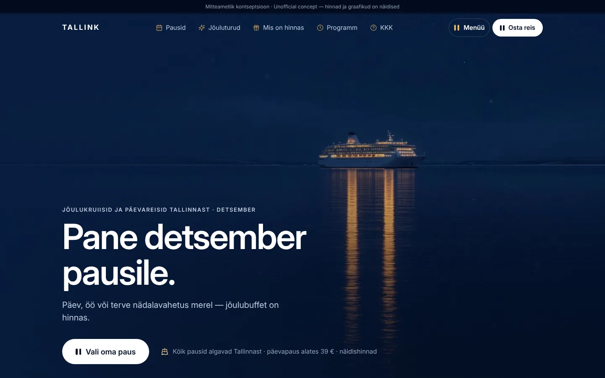
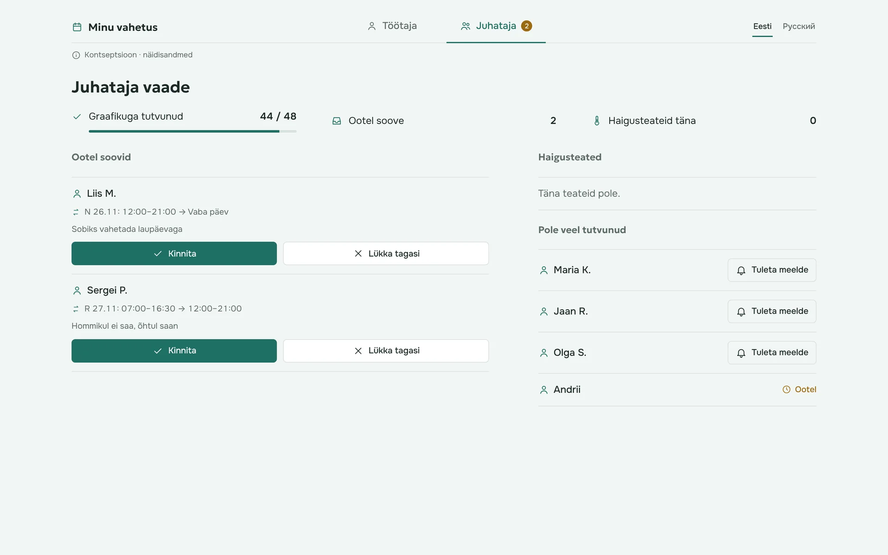

Product designer · Tallinn
I start with the question a person actually has, and design until the product answers it.
Four projects, each named after its question. One of them is a real app my friends and I talk in. I design in Figma and build with AI tools, so an idea gets tested as a working thing, not as a slide.
Available nowEstonian, English, Ukrainian, Russian
01Lobby
“Can we talk and still hear the same track?”
Lobby
A voice app for playing with friends. Everyone hears the same music, and it steps back the moment someone speaks.
Read the case02Answers before the app
“What will my airport ride cost?”
Answers before the app
Four public pages of bolt.eu, rebuilt so each one answers the visitor’s question first and then opens the app with the trip already filled in.
Read the case03Pane detsember pausile
“Can December wait for a day?”
Pane detsember pausile
One idea carried through a landing page, a 15-second film, seven banner formats, print and a newsletter, in Estonian and English.
Read the case
04Minu vahetus
“When do I work tomorrow, and what will I be doing?”
Minu vahetus
The paper schedule and the task card on the back-room wall, moved to the phone. It comes from my own job in a supermarket.
Read the case